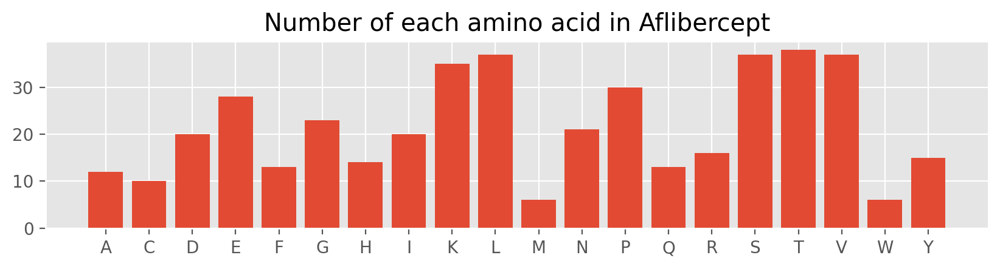
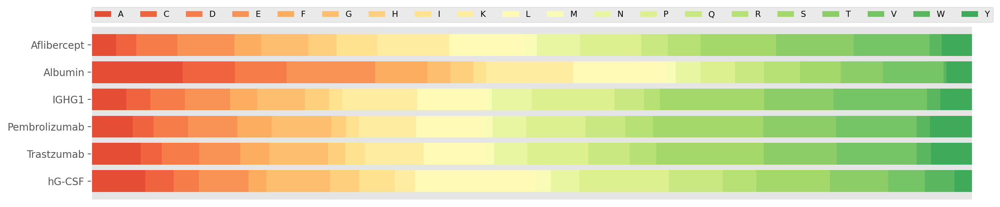

Protein parameters analysis#
The program performs most of the same functions as the Expasy ProtParam tool.
# Name of target protein: -----------------------------Aflibercept
# Molecular weight(Dalton): --------------------------------48,459
# Total number of amino acid: ---------------------------------431
# Chemical formula: -------------------------C2159H3404N582O652S16
# Total number of atom is: -----------------------------------6813
# Extinction coefficient(reduced): --------------------------55350
# Reduced Abs 0.1%(=1 g/L): ---------------------------------1.142
# Extinction coefficient(non-reduced): ----------------------55975
# Non-reduced Abs 0.1%(=1 g/L): -----------------------------1.155
# Theoretical pI: -------------------------------------------8.198
# Aromaticity: ----------------------------------------------7.89%
# The GRAVY value is ----------------------------------------0.460
Aflibercept is more hydrophilic protein.
# The instability index: -----------------------------------39.222
Aflibercept is seems stable.
{kind=link}
Molecular weight
Amino acids are the building blocks that form polypeptides and ultimately proteins. Calculates the molecular weight of a protein.
Chemical composition
A chemical formula is a way of presenting information about the chemical proportions of atoms that constitute a particular chemical compound or molecule, using chemical element symbols, numbers.
Extinction coefficient
Extinction (or extinction coefficient) is defined as the ratio of maximum to minimum transmission of a beam of light that passes through a polarization optical train. extinction coefficient in units of \(M^{-1} cm^{-1}\), at 280 nm measured in water.
Theoretical pI
The isoelectric point (pI, pH(I), IEP), is the pH at which a molecule carries no net electrical charge or is electrically neutral in the statistical mean. The pI value can affect the solubility of a molecule at a given pH. Such molecules have minimum solubility in water or salt solutions at the pH that corresponds to their pI and often precipitate out of solution. Biological amphoteric molecules such as proteins contain both acidic and basic functional groups.
Aromaticity
Calculate the aromaticity according to Lobry, 1994. Calculates the aromaticity value of a protein according to Lobry, 1994. It is simply the relative frequency of Phe+Trp+Tyr.
GRAVY
The GRAVY value is calculated by adding the hydropathy value for each residue and dividing by the length of the sequence (Kyte and Doolittle; 1982). A higher value is more hydrophobic. A lower value is more hydrophilic.
Instability_index
Implementation of the method of Guruprasad et al. (1990, Protein Engineering, 4, 155-161). This method tests a protein for stability. Any value above 40 means the protein is unstable (=has a short half life).
Amino acid composition#
We can easily count the number of each type of amino acid.
Total number of positively charged residues(Arg + Lys):--------51
Total number of negatively charged residues(Asp + Glu):--------48
{kind=link}

/mnt/c4a1c56d-0589-48cd-9717-f6c33a86fa3b/Tools/BioinfoReport/.venv/lib/python3.11/site-packages/Bio/SeqUtils/ProtParam.py:106: BiopythonDeprecationWarning: The get_amino_acids_percent method has been deprecated and will likely be removed from Biopython in the near future. Please use the amino_acids_percent attribute instead.
warnings.warn(
{kind=link}

Potential sites of chemical modification#
An initial scan of the protein sequences is presented based purely upon sequence. If a structural analysis was also requested, this section should be used in conjunction with the molecular surface analysis described in a subsequent section. Any of the sites listed below could be candidates for further consideration if the molecular surface analysis shows that they are significantly exposed on the surface of the protein, increasing their propensity for chemical modification. The canonical sequence analysis is also helpful here, since each of these sites can also be considered in the context of their frequency of occurrence within the canonical library of homologous sequences.
Potential deamidation positions#
Asparagine (N) and glutamine (Q) residues are particularly prone to deamidation when they are followed in the sequence by amino acids with smaller side chains, that leave the intervening peptide group more exposed. Deamidation proceeds much more quickly if the susceptible amino acid is followed by a small, flexible residue such as glycine whose low steric hindrance leaves the peptide group open for attack.
Search patterns: ASN/GLN-ALA/GLY/SER/THR
68-NA-69
84-NG-85
97-QT-98
99-NT-100
158-QS-159
180-QG-181
196-NS-197
271-NA-272
282-NS-283
300-NG-301
369-NG-370
404-QG-405
Potential o-linked glycosylation sites#
The O-linked glycosylation of serine and threonine residues seems to be particularly sensitive to the presence of one or more proline residues in their vicinity in the sequence, particularly in the 2-1 and +3 positions.
Search patterns: PRO-SER/THR
108-PS-109
141-PS-142
223-PS-224
338-PS-339
359-PS-360
Search patterns: SER/THR-X-X-PRO
3-TGRP-6
12-SEIP-15
48-TLIP-51
210-TCPP-213
239-SRTP-242
335-TLPP-338
378-TTPP-381
427-SLSP-430
Potential n-linked glycosylation sites#
Search patterns: ASN-X-SER/THR
36-NIT-38
68-NAT-70
123-NCT-125
196-NST-198
282-NST-284
Secondary structure fraction#
The fraction of amino acids that tend to be found in the three classical secondary structures. These are beta sheets, alpha helixes, and turns (where the residues change direction).
Amino acids in helix: V, I, Y, F, W, L.
Amino acids in turn: N, P, G, S.
Amino acids in sheet: E, M, A, L.
{kind=link}
Secondary structure prediction#
Protein secondary structure prediction is one of the most important and challenging problems in bioinformatics. Here in, the P-SEA algorithm that to predict the secondary structures of proteins sequences based only on knowledge of their primary structure.
---------------------------------------------------------------------------
TypeError Traceback (most recent call last)
Cell In[10], line 155
151 # Transketolase monomer
152 tk_mono = tk_dimer[tk_dimer.chain_id == "A"]
--> 155 sse = struc.annotate_sse(array, chain_id="A")
156 visualize_secondary_structure(sse, tk_mono.res_id[0])
158 plt.show()
TypeError: annotate_sse() got an unexpected keyword argument 'chain_id'
Structural analysis#
Detection of disulfide bonds#
This function detects disulfide bridges in protein structures. Then the detected disulfide bonds are visualized and added to the bonds attribute of the AtomArray. The employed criteria for disulfide bonds are quite simple in this case: the atoms of two cystein residues must be in a vicinity of Å and the dihedral angle of must be .
{kind=link}
The found disulfide bonds are visualized with the help of Matplotlib: The amino acid sequence is written on the X-axis and the disulfide bonds are depicted by yellow semi-ellipses.
Calculation of protein diameter#
This calculates the diameter of a protein defined as the maximum pairwise atom distance.
# Diameter of Aflibercept is: -----------------------145.705 Angstrong.
Protein Scales#
Protein scales are a way of measuring certain attributes of residues over the length of the peptide sequence using a sliding window. Scales are comprised of values for each amino acid based on different physical and chemical properties, such as hydrophobicity, secondary structure tendencies, and surface accessibility. As opposed to some chain-level measures like overall molecule behavior, scales allow a more granular understanding of how smaller sections of the sequence will behave.
kd → Kyte & Doolittle Index of Hydrophobicity
hw → Hopp & Wood Index of Hydrophilicity
em → Emini Surface fractional probability (Surface Accessibility
Hydrophobicity index#
hydrophobicity is the physical property of a molecule that is seemingly repelled from a mass of water (known as a hydrophobe).
{kind=link}
Hydrophilicity index#
Hydrophilicity is the tendency of a molecule to be solvated by water.
{kind=link}
Flexibility index#
Proteins are dynamic entities, and they possess an inherent flexibility that allows them to function through molecular interactions within the cell.
{kind=link}
Surface accessibility#
Data describing the solvent-accessible surface of a molecule is of great utility in the development of that molecule as a therapeutic, particularly in the case of antibodies. In the context of this report, the most obvious application of molecular surface data is in combination with the potential sites of chemical modification, described in the previous section. Proteins are known to undergo many different chemical modifications as a result of interactions with their aqueous environment. The probability and kinetic rate of such a modification is greatly enhanced by the degree of exposure of the potential modification site to the solvent environment. The solvent-accessible surface for each residue depends upon the degree of exposure of the residue on the surface, but also on the size of the residue side chain.
{kind=link}
Instability index#
The instability index provides an estimate of the stability of your protein in a test tube. Statistical analysis of 12 unstable and 32 stable proteins has revealed that there are certain dipeptides, the occurence of which is significantly different in the unstable proteins compared with those in the stable ones.
{kind=link}